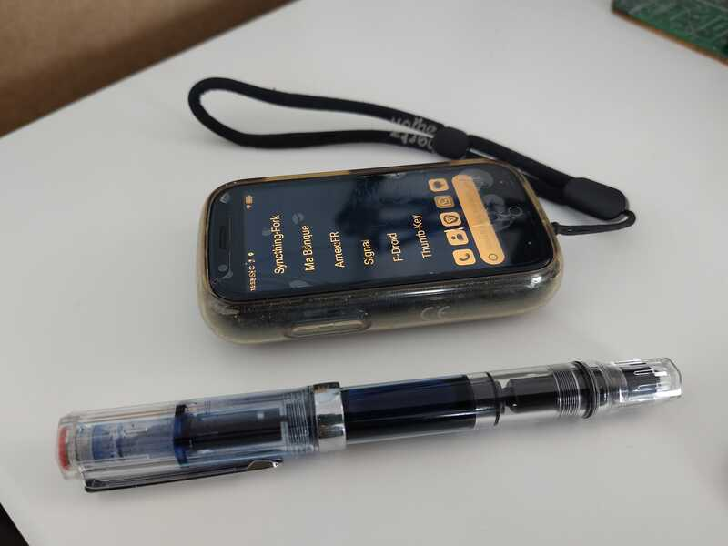
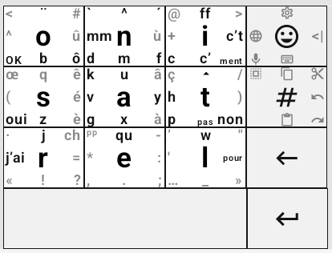
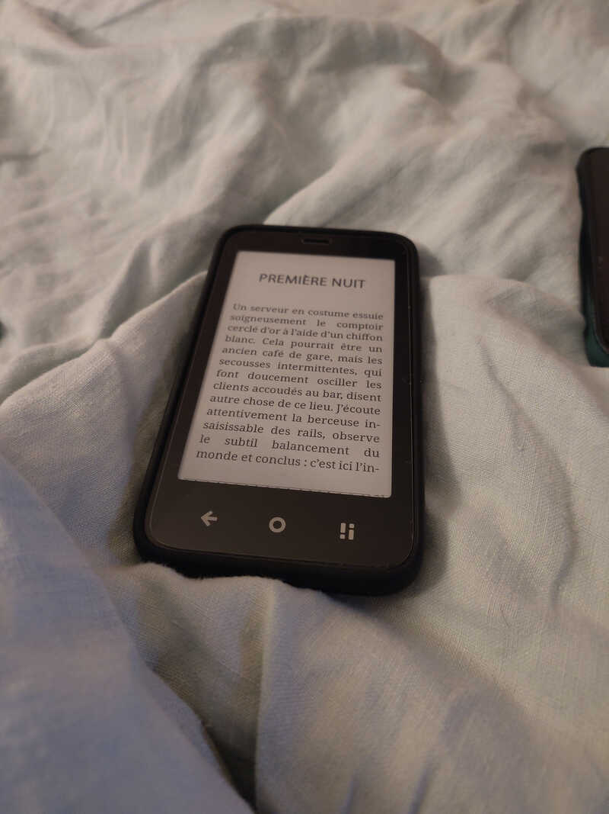
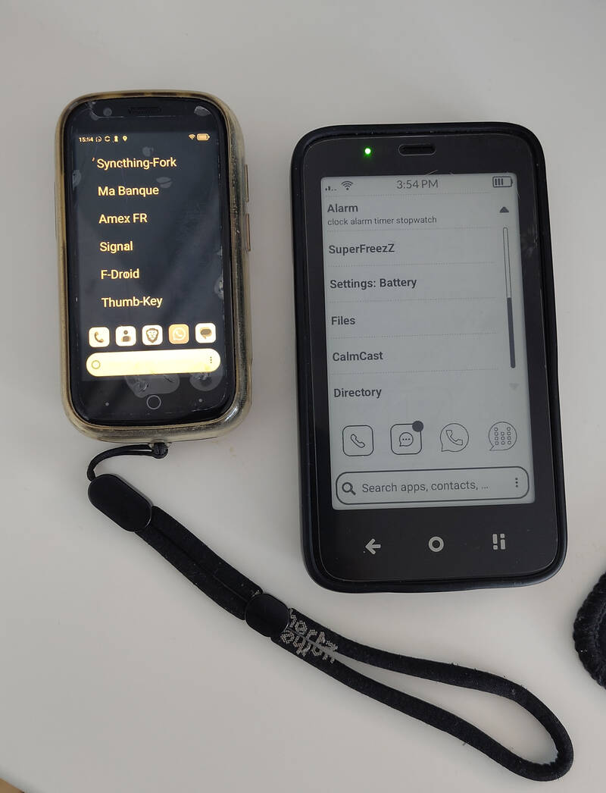

Dumbphones
Table of Contents
Here is my experience with “dumbphones”. I put quotes because they are not really dumbphones per se—except for the AGM M11—but the idea remains the same: detox. I also include under this term:
- feature phone
- “dumbed down” smartphone. For example: a smartphone configured with time limits via parental controls and only minimalist UI apps installed.
- boring phone
Too much time wasted scrolling aimlessly, too many times catching myself picking up my phone for no apparent reason. In short, the pitch is a bit reheated and often obvious today. Not everyone is equal, and some people will manage just fine by regulating themselves or uninstalling superfluous or “toxic” apps from their smartphone. That’s not my case 😬
So, for several months now, I’ve been trying a more radical alternative. It started with the purchase of a Unihertz Jelly Star in early 2025 as my main phone.
Jelly Star (Unihertz)
This tiny smartphone was my main phone for 8 months.

Figure 1: Less than 10cm long, displaying KISS launcher, in grayscale
Strengths:
The screen is tiny.
=> Prevents doomscrolling (Instagram, etc.). You really don’t want to spend time on it. You do what you need to do, and then move on. It’s way too small and cumbersome to want to spend more than 30 seconds on it. This is even truer in grayscale mode.
- The 48MP camera. It’s not high-end, but it’s more than enough—and I’m not just saying that for scanning QR codes.
- The form factor, great size. It’s very satisfying to go out with only this thing in your pocket. The rounded edges are pleasant to hold.
- Good performance. Apart from the size and screen, hardware-wise it’s close to a standard smartphone.
- Headphone jack for audio
- Google compatible, Play Services, Play Store, etc. Banking apps work! It’s also possible to use Uber, for example. Everything is a bit laborious but nothing is impossible.
- NFC
Weaknesses
The screen is tiny.
Surprise! It’s the main feature, but it’s also the issue with this phone when considering it for the long term. It requires a lot of customization to make menus readable, or to increase font size in apps that allow it (WhatsApp and Signal handle this). For the others, too bad, because increasing the font size globally causes other problems that are even harder to manage: visual elements off-screen that you can’t see or click.
For typing, you absolutely need an alternative keyboard like traditional-T9 or thumb-key, available on F-Droid. A classic QWERTY Gboard is too small—it’s hell. Speech-to-text helps a lot.
Aging Android 13
Nothing deal-breaking, but I don’t think Unihertz plans to update it to a newer Android version. There are users who have managed to install LineageOS 20 on it.
Conclusion
For me, it’s a transition and detox phone. I don’t see myself keeping it as my main phone long-term (8 months was already a lot…). Actually, when I read an SMS or a Signal message, I’m not doing anything wrong… and I don’t want to strain my eyes. At first, it’s a calculated disadvantage, but it becomes too painful in the long run, especially when you no longer have the eyes of a 20-year-old.
It ticks a lot of boxes, though. You can do everything and you don’t spend too much time on it. I’d say that if the interface were better customized for its size, it would be almost perfect. But that’s not the norm, and apps are often poorly adapted to the form factor. Nothing insurmountable, but it requires too much time investment, in my opinion, and that’s not the point. We want to care less about the device, not the opposite.
I also wanted to go a bit further. With this phone, you’re dealing with a smartphone in disguise. It works for reducing screen time, the compromise is pragmatic. But it’s not the change I want to see… then I came across:
⇒ Introducing Mudita Mindful Design
So I took the plunge and ordered the Mudita Kompakt.
Mudita Kompakt
First observation with the Mudita Kompakt: I now carry two phones instead of one. The Kompakt and my smartphone. Great 😅. It’s hard to do without my smartphone from day one. It’s more of a transition, and it takes time. To summarize, I’d say that for each need or use case, there are three options:
- Do it differently. It’s always the best and most satisfying, I find. Example: take your credit card or cash instead of paying with your phone’s NFC.
- Use the dumbphone…
- … or the backup smartphone (via hotspot or Wi-Fi).
Which category you fall into depends on the phone’s capabilities or what you’re willing to sideload onto it. I’m trying to find my sweet spot, and it’s not that obvious.
Another painful observation: it’s a rabbit hole. Too much time and energy spent studying hardware options, scouring forums, configuring the phone, trying to manually install this or that APK, looking for alternatives that display correctly on the e-ink screen (there are more and more of them), and so on. I’m close to doing a factory reset and using the product as Mudita intended, without compromise. It’s mostly about changing attitudes and habits.
List of modifications and apps I’ve added manually (via APK, F-Droid, or Aurora Store):
- KOReader - The stock Mudita e-reader app is much worse than KOReader, in my opinion.
- GPSTest - Useful for resetting GPS data when traveling.
- keepass2android - For passwords. I also tried KeePassDX, both work well. keepass2android has been stable for years, so I didn’t see the point in changing.
- WhatsApp - must-have, unfortunately. WhatsApp and Signal (Molly) drain the battery very quickly because there’s no Google Play Services Push Notifications, so they run constantly to check for new messages.
- Molly (Signal FOSS)
- DecSync CC - To sync my contacts in combination with Syncthing.
- ProtonMail - I don’t use it, but it can come in handy.
- QR Scanner (PFA) - for QR codes
- Aurora Store - to install certain apps without needing a Google account.
- Orgzly Revived - My notes and to-do list synced with Emacs via Syncthing.
- CalmDirectory - A directory. Displays very well on the Mudita.
- qrshare - To generate a QR code. (Used once, handy but not essential.)
- F-Droid - for most of the added apps.
- Arcticons - Icons that display correctly on the e-ink screen.
- Proton Calendar - because… synced.
- CalmCast - For podcasts. Developed specifically for the Kompakt. A must-have.
- superfreeze - To kill or freeze apps. This helps maintain good battery life. Depending on usage, I can last 3 days. With WhatsApp and Signal running in the background, it’s more like 24 hours. Personally, I kill everything from time to time because of this. I’m OK to not receive WhatsApp or Signal notifications (people can SMS or call me if it’s urgent).
- My fork of KISS launcher.
- einkbro - E-ink-friendly browser.
- assistral - For interactions with Mistral LeChat.
- syncthingfork - Syncthing to sync files with my laptop.
thumbkey - Keyboard based on the frappefluide layout.
One can look at the frequency of letters for FR and EN etc… This part is very french specific, skipping the details.

Figure 2: The customized thumb-key keyboard
=> yaml config to insert directly into thumb-key, incase you need an example of config.
I fully support what Mudita is trying to do, especially with Mudita Mindful Design (MDD). When you use the stock Mudita apps, you realize how completely messed up the rest of the tobacco industry tech giants are.
All the preinstalled apps on the phone follow these UI and design rules. And it’s true that they are pleasant. We’re even seeing more and more community apps based on these principles:
The last one is a fork of KISS that I made and use on the Mudita Kompakt.
Strengths
The e-ink screen
I love this screen. The resolution could be better, but for text it’s more than enough. Not to mention that in broad daylight, it’s perfectly readable. On a terrace at 1 PM, in full sun, it’s even more legible. For when it’s dark, there’s adjustable backlighting. I set it to minimum in the evening/in the car, or off during the day. With KOReader, I also use it as an e-reader. It fits in your hand and you can turn pages with the volume +/- buttons.

Figure 3: Reading EPUB on KOReader (full size)
Physical “offline” switch
Very cool. You might think it’s a gimmick, that it’s the same as airplane mode. But not quite. It turns off all wireless connections: cellular, Wi-Fi, Bluetooth, … very satisfying just before bed, because it’s very accessible: you don’t have to turn on and look at the phone. Maybe a bit too accessible, as I’ve accidentally activated it in my pocket once or twice.
- Made in Europe Polish company, that matters too.
- No Google. No Play Store, no Google account. That’s what I wanted, but I understand that it can be seen as a negative.
- Ability to sideload apps (APK, or via F-Droid, Aurora Store).
Active community, customer support
Mudita listens to user feedback and delivers updates that improve the software. They don’t say yes to everything, but the fact that they continue to improve and stabilize their product is reassuring. They’re not in a rush, and the intention is there.
{kind=link}
Weaknesses
- Price.
- Lack of performance as soon as you step outside Mudita-supported apps.
- Camera. Good enough for scanning a QR code.
- The preinstalled Calendar app. 😠 Local only, no sync. It doesn’t use Android’s default DB and therefore cannot be synced with something like DecSync CC. I use Proton Calendar for now, but it’s not at all optimized for e-ink. I really don’t understand this choice by Mudita. I want sync for the calendar because I want to spend less time on my screen. If I receive a calendar invitation (.ics for example) by email, I want to be able to accept the invitation directly and have it automatically synced to the phone. Imagine having to enter it manually every time? No thanks. That said, I think it’s on their roadmap.

Figure 4: The Jelly Star and Mudita Kompakt side by side, showing KISS and KISS-eink launchers respectively (full size)
{kind=link}
Conclusion
What’s annoying about all this is that you end up spending $300 or more to get fewer features. It’s still super niche, and the products are made by small teams: Minimal Phone, Mudita Kompakt, Light Phone… and they cost a fortune. The Light Phone III would be the ideal dumbphone if it were priced at $50. Not $699. Seriously, $700?
We’re so used to trying to solve a problem with a consumerist approach that we forget the essentials.
But to conclude, after almost a year on the subject, I have no desire to go back, quite the opposite. I see more clearly what I no longer want to tolerate and let into my daily life.
I regret that there aren’t more standards in place for feature phones. We could simply have something for $30 that doesn’t take us back 20 years. Speaking of standards, CloudPhone looks interesting. It turns the phone into a simple thin client-web terminal and keeps the complex part on servers. With this kind of standard, we could have useful apps (public transport, directory, maps, etc.) on ultra-cheap phones. The AGM M11, coming out at the end of January, is CloudPhone compatible (bad name, by the way), we’ll see if it catches on in Europe.
To finish, some links: